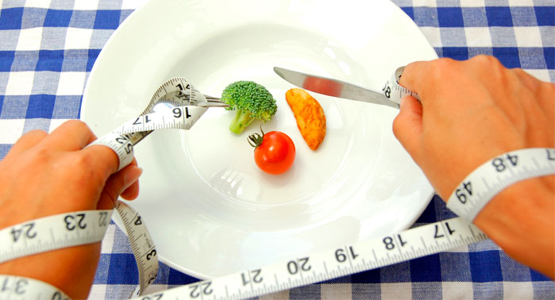

Anorexia nerviosa: Trastorno de origen neurótico que se caracteriza por un rechazo sistemático de los alimentos y que se observa generalmente en personas jóvenes; suele ir acompañado de vómitos provocados, adelgazamiento extremo y, en el caso de las mujeres, desaparición de la menstruación. Trastorno alimentario que provoca que la persona se obsesione con su peso y lo que ingiere. La anorexia nerviosa, a menudo simplemente denominada «anorexia», es un trastorno de la alimentación potencialmente mortal que se caracteriza por un peso corporal anormalmente bajo, un gran temor a aumentar de peso y una percepción distorsionada del peso o de la figura corporal. Las personas con anorexia hacen todo lo posible por controlar el peso y la figura corporal, lo que frecuentemente afecta de manera importante la salud y las actividades cotidianas. Cuando tienes anorexia, limitas en exceso la ingesta de calorías o usas otros métodos para bajar de peso; por ejemplo, te ejercitas de forma desmesurada, tomas laxantes o suplementos dietéticos, o vomitas después de comer. Los esfuerzos para bajar de peso, incluso cuando el peso corporal es bajo, pueden causar problemas de salud graves al punto de morirse de hambre.
Bulimia nerviosa
La bulimia nerviosa, llamada frecuentemente «bulimia», es un trastorno de la alimentación grave y potencialmente mortal. Cuando padeces bulimia, tienes episodios de atracones y purgas que incluyen la sensación de pérdida de control sobre tu alimentación. Muchas personas con bulimia también restringen lo que comen durante el día, lo que suele causar más episodios de atracones y purgas. Durante estos episodios, es normal que consumas una gran cantidad de alimentos en un tiempo corto, para luego intentar deshacerte de las calorías extra de una manera poco saludable. Debido a la culpa, la vergüenza y el temor intenso a aumentar de peso por comer en exceso, puedes provocarte vómitos, puedes ejercitarte desmesuradamente o puedes usar otros métodos, como los laxantes, para deshacerte de las calorías. Si tienes bulimia, probablemente te preocupe tu peso y tu figura corporal, y tal vez te juzgues con severidad y dureza por los defectos que son producto de tu autopercepción. Puedes tener un peso normal o, incluso, un poco de sobrepeso. La bulimia o bulimia nerviosa es un trastorno alimenticio y psicológico caracterizado por la adopción de conductas en las cuales el individuo se aleja de las formas de alimentación saludables.